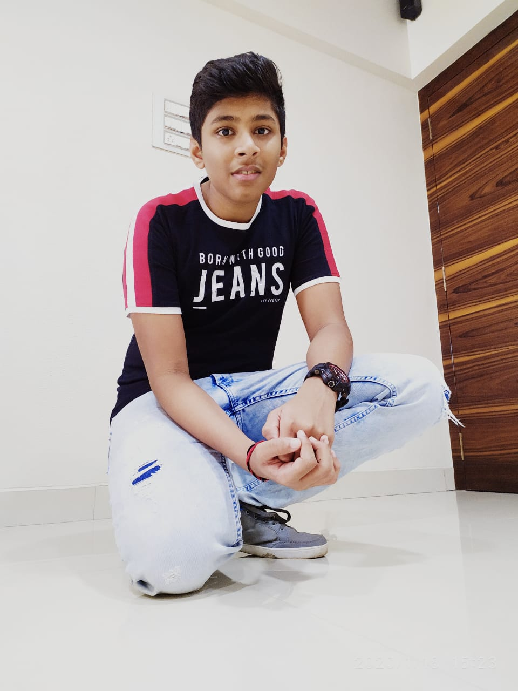

Hi, My name is Shivang
and I am a passionate
1. About Me

I'm a Software Engineering Technology student at
Conestoga College, currently embarking on an exciting journey in the realm of technology.
Originally
from Mumbai, India, I've found my academic home amidst the serene landscapes of Waterloo,
Ontario,
Canada, driven by an insatiable passion for all things tech.
💻 Proficient in a range of programming languages such as C, C++, C#, HTML,
JavaScript,
and CSS, I've laid a sturdy groundwork in software development. My expertise extends to database
management with MySQL and adept handling of version control using Git and GitHub. Navigating the
intricacies of the .NET Framework while embracing Object-Oriented Programming (OOP) principles,
I
approach challenges with a solution-focused mindset.
🚀 Beyond mastering code, my goal is to engineer solutions that make a meaningful
impact in
our ever-evolving technological landscape. I'm dedicated to leveraging my skills and knowledge
to
create
innovations that transcend boundaries, making a tangible difference. Let's connect and explore
the
endless possibilities of tech-driven change together!